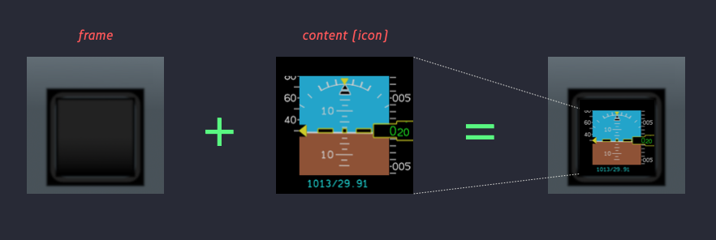
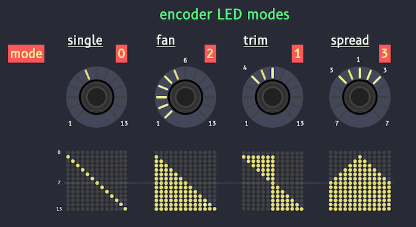

The Representation of a button determine how it will be displayed on the deck device.
The representation depends on the capabilities of the button on the deck. There is a list of valid representations or a given button on a deck. A image or icon cannot be displayed on a LED-only button.
The first attribute mentioned in each section below determines the type of Representation (icon, text, multi-icons, etc.)
If more than one representation is found, or a representation that is not valid for the given button, a warning message is reported and the button does not render anything.
If no Representation is found, a warning message is reported and the button is assumed having no representation. For example, a X-Touch Mini slider has no representation. To suppress the warning message, the representation attribute can be used and set to false.
- index: slider
name: SLIDER
type: slider
representation: false
will not issue any warning message.
Common Attributes¶
Managed¶
dataref: dataref-path
Path to a dataref that is interpreted to determine whether the value is managed.
If the value is managed, the value can be displayed as a text string in an alternative way depending on the text-alternate value.
text-alternate: dash=4: Represent managed value by a set of -. Default is 3 dashes.
text-alternate: dot: Represent managed value by a single dot •.
- index: 0
type: none
name: FCU Airspeed display
label: SPD
text: ${sim/cockpit2/autopilot/airspeed_dial_kts_mach}
text-format: "{:3.2f}"
text-color: khaki
text-size: 24
text-font: Seven Segment.ttf
text-position: cm
text-bg-color: (40, 40, 40)
managed:
dataref: AirbusFBW/SPDmanaged
text-alternate: dash
In example above, speed managed mode, if AirbusFBW/SPDmanaged dataref value is non zero, the text will display ---. Otherwise, it will display the air speed.
Guard¶
dataref: dataref-path
Path to a dataref that is interpreted to determine whether the button or key is guarded (protected against unintentional use by a cap or lock). If guarded, it can be displayed in an alternative way depending on the options value.
type: Protects the button with a full red cover (type: full) or a see-through grid (type: grid)(cover is the default).
color: Color of the guard. Default is red for cover, and translucent red for grid.
label: RAM AIR
guard:
type: grid
color: black
dataref: ckpt/ramair/cover
# 0=closed, 1=opened
Guarded buttons or keys need to be pressed twice to activate, the first activation lifts the guard, the second one acts normally. To replace the guard, a long press of more than 2 seconds is necessary to replace (close) the guard. (Make sure long press lasts 2 seconds or more, otherwise the button will be activated!)
Icon¶
icon: ICON_FILE_NAME
An image file is loaded on the deck key if it is capable of displaying images.
Attributes¶
icon: isi
frame:
frame: frame_image.png
frame-size: [256, 256]
content-size: [128, 128]
content-offset: [64, 64]
A frame is a special "background" image that is first loaded, and the icon itself is laid over the background image. In the above example, icon isi will be resized to 128x128px and placed (pasted, laid over) at position (64, 64) in the frame image.

The purpose of framed icon is to provide a uniform icon representation (the frame) with varying inner content (the icon itself).
It is different from a textured background because it allows for icon placement and resizing before pasting over the underlying image frame.
IconText¶
text: "SOME\nTEXT"
An image file is created with a uniform background color or texture and text laid over.
The text laid over the button should not be confused with the label. The text laid over is additional to the label, and can be dynamic to display a changing value like the heading of the aircraft or the amount of fuel left in a tank.
Attributes¶
text-bg-color: lime
Background color of the image or icon where the text is displayed. Default background color is cockpit color.
text-*: value
Values for font, font size, color, and position of the text on the image.
Text Substitution¶
It is possible to use subsitution of coded string in text values:
${dataref-path}is replaced by the scalar value of the dataref pointed bydataref-path.${formula}is replaced by the value computed in theformula.${state:name}is replaced by the scalar value of the button' statename.
Note: A Text string value is not a formula and is not evaluated. Above strings are simply substituted.
text: ${formula}
text-format: 4.2f
formula: 3.14 2 ${dataref-path} * *
Will produce an icon with text value "3.14" text in the middle.
MultiIcons¶
multi-icons
multi-icons:
- ICON_FILE_1
- ICON_FILE_2
Multiple icon files are displayed according to the value of the button.
For example, for an OnOff activation type there may be two icons for On and Off positions; for a UpDown activation type, there may be one icon for each stop position.
No attribute.
MultiTexts¶
multi-texts
multi-texts:
- text: Option 1
text-color: green
- text: Option 2
text-color: amber
- text: ${aicraft/some_value}
text-format: "Limit reached {4.1f}"
text-color: red
text-font: DIN Bold
text-position: tr
formula: ${dataref_for_text_selection}
A Multitext attributes contains a list of IconText-like attributes (a list of text block) where each text block can contain attributes like in an IconText text block.
A single text block is selected according to the value of the button.
In the above example, the formula ${dataref_for_text_selection} return 2, the second text block
text: ${aicraft/some_value}
text-format: "Limit reached {4.1f}"
text-color: red
text-font: DIN Bold
text-position: tr
will be selected and displayed as a IconText.
Attributes¶
None
Important Note¶
The selection of the text block must be performed by a formula and not a dataref.
When a formula is present in the attributes of a button, it is always favored over a list of datarefs, even if the list contains only one dataref. (If there a button uses multiple datarefs and there is no formula, the value that is returned for that button is a diectionary of all dataref values.)
IconAnimation¶
icon-animation:
- ICON_FILE_1
- ICON_FILE_2
Multiple icon files are displayed in sequence automagically when the button is On.
Attributes¶
icon-off: ICON_FILE_NAME
The icon to display when the button is Off. If there is no icon-off, the first icon in the icon-animation list is used.
speed
Time in second an icon is displayed before displaying the next one.
IconSide¶
icon-side: ICON_FILE_NAME
An IconSide is a special icon for LoupedeckLive devices, used on either side of the main panel. IconSide have particular display capabilities to cope with their specifics, sizes, and their positions that allow to display information regarding the nearby encoders.
Attributes¶
labels
Labels that are displayed on the icon.
label-positions
Label anchor position expressed in percentage of the 100% height of the side image.
Note: There might be similar icons to control the display of other, larger display like the Streamdeck Plus bottom LCD display.
LED¶
`led: led
Turns a single LED light On or Off depending on the button's value.
ColoredLED¶
led: colored
Attributes¶
color: orange
Turns a single LED light On or Off depending on the button's value. The color of the LED is determined by the color attribute.
The color attribute can use a formula to determine the color (single hue value in 360° circle.)
MultiLEDs¶
led: multi-leds
MultiLeds are LED-based display that use more than one LED for reporting information.
X-Touch Mini encoders, for example, are surrounded by 11 LED that can be lit individually.

Attributes¶
led-mode: fan or led-mode: 2; name or number
Valid modes are:
- Single
- Trim
- Fan
- Spread
The value of the button determine how many leds will be displayed (0 to 11).
Annunciator¶
Annunciators are special type of button display. There is a dedicated page for them.
annunciator:
text: "MASTER\nWARN"
color: red
font: DIN Condensed Black.otf
text-size: 72
dataref-rpn: AirbusFBW/MasterWarn
options: blink
Switches¶
Switches are drawings often used by OnOff activations that can be used in replacement of icons.
Switches is a drawing of a simple two or three-way switch.
Circular switches are multi-value rotation switches or selectors.
Push switches are simpler two state push button.
Deck Specific Displays¶
Some decks have particular LCD displays. Cockpitdecks designed specific activations and representations for those.
Other Representations¶
Above switches are special instances of dynamically drawn representations.
There are other dynamically drawn represetations for displaying data, or weather information.
The sky is the limit.
Representation Validity¶
Each Representation has a is_valid() method that checks whether all necessary attributes or parameters are available to it and valid. If the validity function fails, a warning is reported and the button is not rendered. The inspect keyword used to verify the validity of the representation is valid.
Each Representation has an describe() method that explains what it displays in plain English. The inspect keyword used to describe the representation is what.